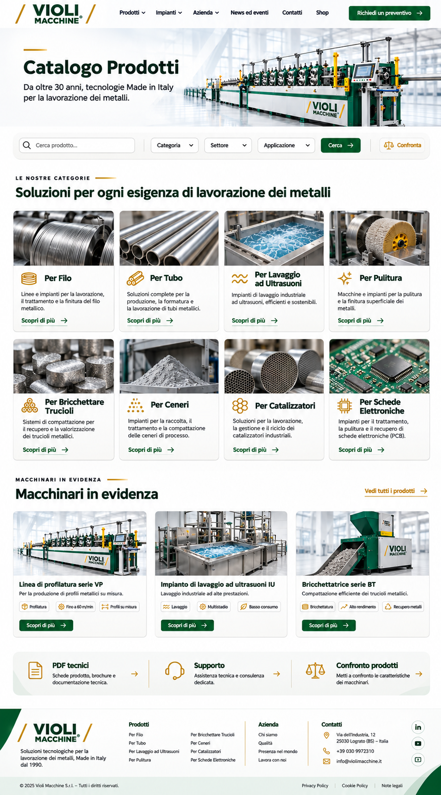

Per Filo
Linee e impianti per la lavorazione, il trattamento e la finitura del filo metallico.
Scopri di più
Da oltre 30 anni, tecnologie Made in Italy
per la lavorazione dei metalli.
Le nostre categorie
Linee e impianti per la lavorazione, il trattamento e la finitura del filo metallico.
Scopri di piùSoluzioni complete per la produzione, la formatura e la lavorazione di tubi metallici.
Scopri di piùImpianti di lavaggio industriale ad ultrasuoni, efficienti e sostenibili.
Scopri di piùMacchine e impianti per la pulitura e la finitura superficiale dei metalli.
Scopri di piùSistemi di compattazione per il recupero e la valorizzazione dei trucioli metallici.
Scopri di piùImpianti per la raccolta, il trattamento e la compattazione delle ceneri di processo.
Scopri di piùSoluzioni per la lavorazione, la gestione e il riciclo dei catalizzatori industriali.
Scopri di piùImpianti per il trattamento, la pulitura e il recupero di schede elettroniche (PCB).
Scopri di piùProva una ricerca diversa o rimuovi i filtri.
Macchinari in evidenza
Schede prodotto, brochure e documentazione tecnica.
Assistenza tecnica e consulenza dedicata.